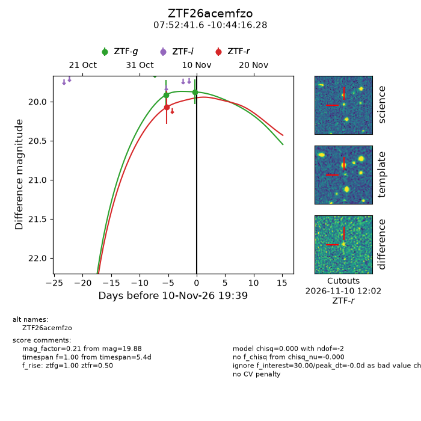
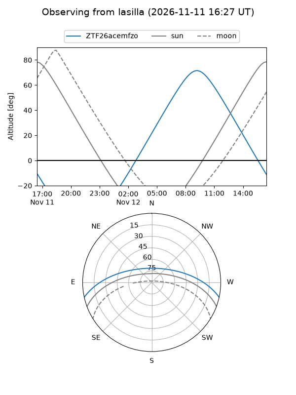
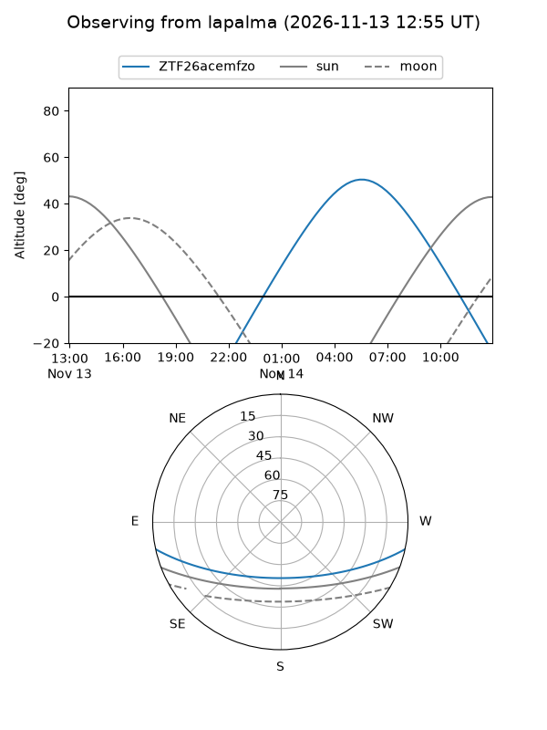
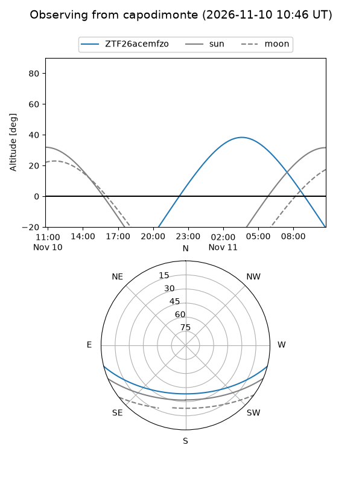
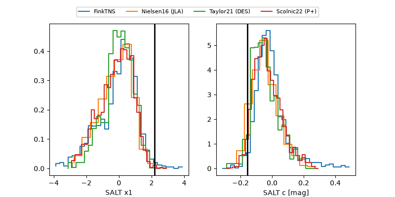

ZTF26acemfzo
Target ZTF26acemfzo at 2026-11-10 19:42
Aliases and brokers:
FINK-ZTF: ztf.fink-portal.org/ZTF26acemfzo
Lasair-ZTF: lasair-ztf.lsst.ac.uk/objects/ZTF26acemfzo
ALeRCE-ZTF: alerce.online/object/ZTF26acemfzo
Direct TNS query: direct search
alt names
ZTF26acemfzo (ztf,fink_ztf)
Coordinates:
equatorial (ra, dec) = 118.1734,-10.73786
equatorial (HMS+DMS) = 07:52:41.61,-10:44:16.28
galactic (l, b) = (229.6232,+8.39399)
Flags:
peak dt: -0.0
Photometry:
last ztfg=19.88, ztfr=20.07
2 ztfg, 1 ztfr detections
Lightcurve

Visibility



Additional plots
